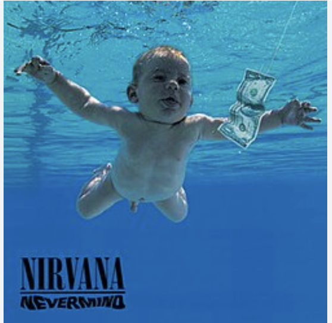

Nevermind is the second studio album and major-label debut by American rock band Nirvana, released on September 24, 1991 by DGC Records. It was Nirvana's first release to feature drummer Dave Grohl. Produced by Butch Vig, Nevermind features a more polished, radio-friendly sound than the band's prior work.[4] It was recorded at Sound City Studios in Van Nuys, California, and Smart Studios in Madison, Wisconsin, in May and June 1991, and mastered that August at the Mastering Lab in Hollywood, California.
The album's unexpected success popularized the Seattle music scene and brought grunge to a mainstream audience. It was a critical and commercial success, topping the charts in several countries and selling over 30 million copies worldwide. The album was certified diamond by the Recording Industry Association of America (RIAA) in 1999, and has been ranked among the greatest albums of all time by several publications. The album's lead single, "Smells Like Teen Spirit", became a worldwide hit and is often credited with bringing alternative rock to a mainstream audience. Other singles from the album include "Come as You Are", "Lithium", and "In Bloom".